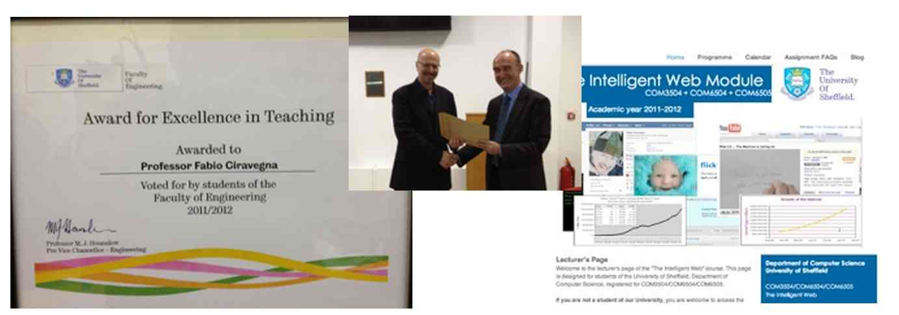

I enjoy lecturing and the contact with students. I regularly teach at the University of Sheffield for
about 40 hours a year plus about 20 hours of lab classes.
Current Teaching activities
- Spring term of the current year:
Past teaching activities (2003-2009)
- COM262: Algorithms and Data Structures for non Computer Scientists
To this, I add every year a number of tutorials and invited talks I give at international
scientific events.
You might be interested in some videos and slides of my scientific talks and tutorials, as well
as a list of events.